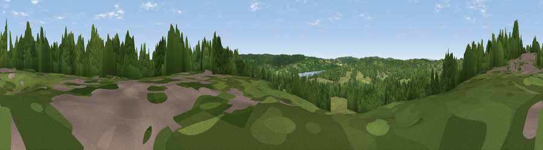

Viewpoint near Ashurst Wood
#38702 in England · top 64% of its area beats it · near Ashurst WoodThe view, rendered

A 360° render of this exact spot computed from the terrain model, tree cover and land cover — summer colours, afternoon light, calibrated against photographs of famous viewpoints. Real trees, hedges and buildings will differ in detail.
The panorama
Grey silhouette: terrain skyline in each direction (720 bearings, Earth curvature and refraction included). Dashed green: skyline with trees (+15 m) and buildings (+8 m) as obstacles. Blue strip: how far the ground is visible on each bearing.
Where the view opens
Wedge length = distance to the farthest visible ground on that bearing (vegetation-aware). Rings at 10, 25 and 50 km.
What fills the view
51% woodland · 42% grassland · 3% built-up · 2% cropland ·
Angular shares of the visible panorama (visual magnitude), not map area. Landscape diversity 0.41 (0–1 Shannon).
Key numbers
More beautiful places nearby
The staircase of upgrades: each row has a higher view potential than everything closer. Driving times are estimates from straight-line distance, calibrated against real road routing — check an actual route before setting out.
| Place | Direction | Drive | Score |
|---|---|---|---|
| Viewpoint near Dormans Park | N · 3 km | ~6 min | 37.9 |
| Viewpoint near Forest Row | ESE · 3 km | ~6 min | 42.9 |
| Viewpoint near Forest Row | SSE · 5 km | ~11 min | 48.1 |
| Dry Hill | NNE · 5 km | ~12 min | 55.7 |
| Viewpoint near Upper Hartfield | SE · 8 km | ~15 min | 59.6 |
| Viewpoint near Godstone | NNW · 14 km | ~26 min | 62.2 |
| Viewpoint near French Street | NNE · 15 km | ~27 min | 65.8 |
| Viewpoint near Ide Hill | NNE · 17 km | ~29 min | 67.9 |
51.11423, 0.01552 · source: screening · position refined by local search. Computed location — check access rights before visiting.